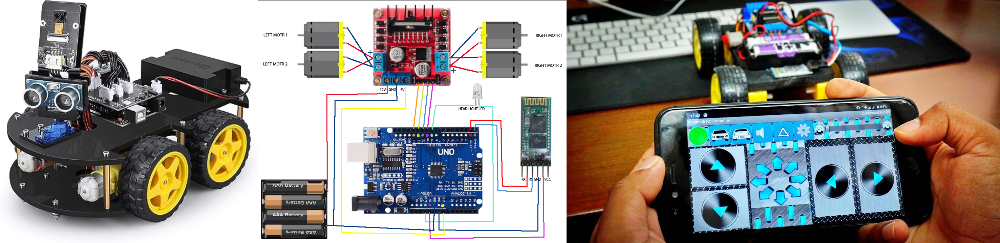

Bluetooth Controlled RC Car
January 2018 - February 2018
Kumaraguru College of Technology, Coimbatore, Tamil Nadu
This project is a simple Bluetooth-controlled RC car that is made with an Arduino Uno, a motor driver, a Bluetooth module, and four DC motors.
Parts list:
Arduino UnoMotor driver (L298N or similar)
Bluetooth module (HC-05 or similar)
4 DC motors
Wheels
Chassis
Battery
Jumper wires
Male-to-female connectors
Instructions
Connect the Arduino Uno to the motor driver according to the motor driver's instructions.Connect the Bluetooth module to the Arduino Uno according to the Bluetooth module's instructions.
Connect the DC motors to the motor driver.
Connect the wheels to the DC motors.
Connect the chassis to the DC motors.
Connect the battery to the motor driver.
Upload the code to the Arduino Uno.
Open the Bluetooth app on your phone.
Pair the Bluetooth module with your phone.
Once the Bluetooth module is paired with your phone, you can control the RC car with the app.
Conclusion
is a simple project that you can use to learn about how to control an Arduino with Bluetooth. With a little modification, you can also add features like speed control and obstacle avoidance to your RC car.
Check out the project here GitHub for code.